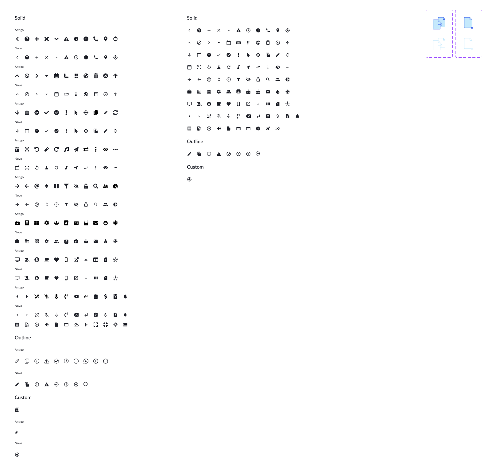

Conjunto proprietário do design system. Cada ícone está disponível em duas variantes principais — Solid (preenchido) e Outline (contorno) — mais um conjunto Custom para casos específicos. O folder mostra a migração da nomenclatura: Antigo (deprecated) e Novo (atual). Use sempre os ícones marcados como Novo.
